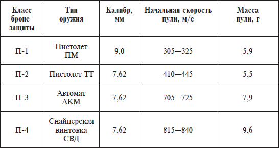

Двери.


В современном доме двери являются одной из самых выразительных деталей интерьера. Поэтому к установке дверей и оформлению проемов сегодня предъявляют довольно жесткие требования. Ведь от того, как новые двери будут установлены, зависит не только общее впечатление об интерьере отремонтированной квартиры, но и удобство и безопасность жильцов.
Входные двериЧеловек, принимая решение установить в помещении бронированную дверь, думает в первую очередь о безопасности. Во-вторых, о том, что такая дверь служит долго, по крайней мере несколько десятков лет, и не будет доставлять особых проблем. В-третьих, обладает хорошими звуко– и теплоизоляционными свойствами. Помимо этого, двери – это не только надежная защита, но и элемент дизайна.
Все металлические входные двери можно классифицировать по ценовым категориям: двери эконом-класса, бизнес-класса и элитные. Эконом-класс– стандартные входные двери, функциональные и недорогие, обладающие достаточной прочностью и хорошими противовзломными характеристиками. Как правило, обработка таких дверей самая простая. Бизнес-класс– входные двери, отвечающие повышенным требованиям безопасности. Они могут быть оснащены дополнительными секретными замками и бронированными накладками. Элитные двери по уровню безопасности и оснащения практически не отличаются от бизнес-класса, но для их производства используются более прочные сорта стали, дорогая отделка.
По степени устойчивости к вскрытию двери подразделяют на следующие классы: 1-й класс – специалисту невозможно вскрыть дверь только с использованием физической силы и простейших инструментов; 2-й класс – специалист не может вскрыть дверь с использованием любых инструментов (молоток, зубило, лом), кроме специальных электрических; 3-й класс – специалист не может вскрыть дверь с использованием любых инструментов, включая электрические, мощностью не более 500 Вт; 4-й класс – дверь должна обеспечивать пуленепробиваемость (защиту от любого вида стрелкового оружия, кроме специального (противотанкового). Металлические двери 5-го и 6-го классов взломостойкости применяются для устройства и сохранности ценностей в банках.
Для того чтобы соответствовать хотя бы первому классу устойчивости к взлому по вышеуказанному стандарту, защитная стальная дверь должна обладать следующими свойствами: конструкция двери должна представлять собой каркас из стального прямоугольного профиля с дополнительными ребрами жесткости; обшивка двери должна состоять из двух стальных (лучше холоднокатаных) листов толщиной не менее 2,5 мм каждый; дверь должна быть оснащена двумя замками разных систем, один из которых сейфовый; конструкция двери должна обеспечивать затрудненный доступ к замкам и их ригелям.
Конструкция бронированных дверей аналогична: два листа стали, соединенные между собой ребрами жесткости, но бронированные – пуленепробиваемые (различаются видом стали). Кроме таких внешних характеристик, бронированная дверь также обладает рядом качеств, обеспечивающих ей большую устойчивость к механическому взлому. Чаще всего с этой целью внутреннюю часть дверного полотна наполняют армированным сталефибробетоном. Замки на бронированных дверях тоже особенные – отличаются от обычных высокой степенью защиты. Запор имеет 4—10 подвижных ригелей – стальных прутьев диаметром 20–30 мм, которые при запирании механизма замка заходят в стальную раму и плотно фиксируют.
Технология производства бронированных дверей достаточно сложная, стоят они существенно дороже обычных металлических, поэтому приобретать такую продукцию следует только после консультации со специалистом. Каждая из моделей таких дверей проходит испытание разными видами огнестрельного оружия, и в зависимости от результатов экспертизы им присваивается определенный класс бронезащиты (П-1—П-4) (см. таблицу 4).
Таблица 4

Кроме пуленепробиваемых, есть еще взрывобезопасные двери , в которых ребра жесткости расположены таким образом, что конструкция устойчива к взрывам.
Петли . Важным элементом стальной двери являются петли. Поскольку подавляющее большинство стальных дверей открывается наружу, то снаружи привариваются и петли. Существуют также скрытые петли, которых не видно ни снаружи, ни внутри. При установке и выборе петель следует обратить внимание, чтобы они содержали либо опорный подшипник, либо опорный закаленный шарик. Это – гарантия от истирания петель, одной из причин крайне неприятного явления – проседания двери.
Дверная цепочка — приспособление, с помощью которого можно открыть дверь на безопасное расстояние. Для большей безопасности на дверь ставят классическую цепочку с крючком на конце. Она прикрепляется к дверному каркасу, а на дверь ставится щеколда для крючка. Длина цепочки, которая зависит от числа звеньев, определяет, насколько можно приоткрыть дверь, например на 5—15 см.
Не так давно появился новый вариант дверной цепочки. Она похожа на длинную металлическую петлю, слегка расширяющуюся у основания. Одна часть крепится к коробке, а на дверь приворачивается металлический крючок с шариком на конце. Если нужно приоткрыть дверь на безопасное расстояние, петля накидывается на палочку с шариком, который легко входит в расширение у основания. Когда дверь приоткрывается, шарик скользит по более узкому месту до конца петли и не дает распахнуть дверь. Чтобы впустить посетителя, надо снова закрыть дверь, откинуть петлю и опять открыть.
Дверной глазок – устройство, с помощью которого можно, не открывая входную дверь, осмотреть лестничную площадку. Основная характеристика глазка – угол обзора. Чем он больше, тем лучше. Самый большой угол обзора – 180°, самый маленький – около 120°. Для установки глазка нужно обязательно знать толщину двери: это от 35 до 60 мм для обычных дверей и 85 мм для усиленных металлических. Поэтому «туловище» глазков делают разной длины, а также разных диаметров, чтобы можно было установить глазок на любую дверь.
Кроме этого, у каждого глазка есть резьба, регулирующая длину. Оптика глазка может быть стеклянной или пластмассовой (естественно, стеклянные глазки прочнее и меньше царапаются), а «тело» делают металлическим или пластмассовым. Материал, из которого сделан глазок, влияет и на качество глазка, и на цену. По отзывам специалистов, глазки из металла и стекла самые надежные, но и самые дорогие.
Утеплитель и уплотнитель. Внутри двери обязательно должен присутствовать утеплитель, который также выполняет функции поглотителя звука. Одними из лучших утеплителей и звукопоглотителей являются различные типы минеральной ваты, желательно только, чтобы в них не присутствовало стекловолокно. Эти материалы экологически чисты, не горят, а при высокой температуре не выделяют токсичных веществ.
Для изоляции от звуков, холода и запахов лучше всего применять резиновый уплотнитель (специальный дверной) по периметру двери. Совершенно непригоден для этой цели оконный самоклеящийся уплотнитель.
Не менее важна и качественная заделка щелей между рамой двери и стеной, а также заполнение самой рамы. Наиболее эффективным материалом для этого является бетон. Также, заботясь о тепло– и шумоизоляции, нужно обратить внимание на технологию установки двери.
Выбор дверного замка. Современный замок – это изделие, имеющее сложную комбинацию запирающих устройств или рабочих штифтов, обеспечивающих блокировку. По принципу действия замки можно разделить на три группы: механические, электромеханические и электромагнитные.
Наибольшую известность и популярность получил английский цилиндровый замок, изобретенный в 1847 году американцем Лайнусом Йейллом, благодаря небольшому плоскому ключу, который мог иметь множество вариантов конфигураций бороздок.
«Эврика», кодовый замок с пятью пальцами, защищенный от случайного набора кода, запирал когда-то один из сейфов казначейства США. Его запатентовали в 1862 году Доддз, Мэкнил и Урбан из штата Огайо. Количество букв и цифр на замке делает возможным набор 1073741824 комбинаций; чтобы все их перебрать, не прерываясь, потребовалось бы 2042 года, 324 дня и 1 час.
«Русский висячий замок» был выкован вручную в царствование последнего царя, Николая II. Большое округлое кольцо сверху – это «рукоятка» ключа, на которой есть нарезка и которая ввинчивается в замочную скважину, чтобы разблокировать запирающий механизм. Когда скоба становится в позицию запирания, вместо ключа вставляется затычка, чтобы казалось, что замочной скважины нет. Нарезная часть ключа ввинчивается затем в защитный футляр.
В первой половине 1920-х годов Уолтер Шлаге усовершенствовал концепцию цилиндрического пальцевого замка, поместив кнопочный запирающий механизм между двумя ручками. Замок Шлаге являет собой совершенно иную концепцию цилиндрического замка и славится своей надежностью.
К покупке замка надо подходить осмотрительно. Особенно к дорогим зарубежным моделям: обязательной сертификации импортных замков пока не предусмотрено. Но некоторые фирмы проходят ее добровольно. Например, в США с качеством строго. Каждый год замки основных фирм проходят испытания. Одно из них выглядит так. Замок врезают в дверь, а потом трижды бьют по ней болванкой с высоты в полтора метра. Дверь с замком жгут – механизм не должен расплавиться в течение часа. Значит, если дверь выдержит, то и он не пропустит огонь в случае пожара. Наши испытания выглядят менее экзотически. Сказано в инструкции, например, что замок выдерживает 200 тыс. поворотов – так его 200 тыс. раз и поворачивают.
Для входных дверей чаще покупают немецкие замки, очень крепкие, добротные, без, как говорят, финтифлюшек. Сейчас принято покупать массивные врезные замки не с одним, а с несколькими засовами. Надо только иметь в виду, что врезной замок ослабляет саму дверь (особенно деревянную). Накладной замок, наоборот, оставляет ее в целости и сохранности, но его слабое место – крепления. Есть американские системы, в которых несколько замков отпираются со стороны квартиры сразу, одной ручкой. Замки типа «Квиксет», «Вайзер» имеют «английские» ключи. Они дают возможность делать десятки тысяч секретов. В «Вайзере» их 90 тысяч. Но хотим вам напомнить: никакие замки не будут иметь смысла, если слабы дверь и косяк.
В продаже есть замки для внутренних помещений: у них прочное покрытие на ручках, надежный механизм, который, между прочим, не требует смазки, а значит, она не вытечет, не засохнет…
Рассмотрим теперь подробней виды замков.
Механические замки — наиболее традиционные запирающие устройства, которые широко используются на наружных и внутренних дверях. По конструкции механические замки подразделяются на сувальдные, цилиндровые (английские) и дисковые.
Сувалъдные (сейфовые) замки были известны раньше других механических запирающих устройств. Первые их представители были известны еще в Древней Персии три тысячи лет назад. Благодаря своим превосходным характеристикам сувальдные замки пользуются огромной популярностью и в наши дни. Их основная конструкция за долгие годы не претерпела значительных изменений, лишь некоторые составляющие были усложнены. Основным элементом этих замков являются сувалъды (кодовые пластины, расположенные в корпусе замка, блокирующие его), по краям замка с одной или обеих сторон помещаются вырезы или точечные вмятины.
Запирание и отпирание механизма происходит за счет набора сувальд, которые под воздействием ключа выстраиваются в строго определенных положениях. Эти замки достаточно массивны, а значит, их не так-то просто выбить из двери. Уровень секретности зависит от количества сувальд. Как правило, качественные сувальдные замки должны иметь не меньше 6–7 сувальд. Эти замки обладают высокой секретностью и превосходными охранными свойствами. От взлома посредством отмычки сувальдные замки защищаются увеличением количества сувальд, а также усложнением их формы. Кстати, качество сувальдного замка легко проверить прямо в магазине: достаточно внимательно изучить ключ. Лучше, если грани бороздок ключа будут прямыми, хорошо отшлифованными и без закруглений. В этом случае секретный механизм, скорее всего, выполнен качественно. При производстве современных сувальдных замков широко используется метод переменной шлифовки. Это тоже легко увидеть при изучении ключа. Нужно обратить внимание на расстояние между противоположными зубьями ключа: оно может быть постоянным или переменным. Лучше, если оно будет переменным – в этом случае будет значительно сложнее подобрать ключ или отмычку к замку.
Сувальдные замки, по сравнению с другими типами замков, обладают наивысшими взломостойкими и антивандальными характеристиками. Среди недостатков сувальдных запирающих устройств можно назвать их относительно невысокую секретность. Массивность такого замка предполагает громоздкость ключей. Еще одним недостатком сувальдного замка является его скважина, которую легко просверлить, если она не защищена специальной прочной стальной накладкой.
Цилиндровые замки , широко известные среди потребителей как «английские» или штифтовые, получили такое название благодаря своей конструкции. На сегодняшний день это, пожалуй, самые распространенные запирающие механизмы. «Сердцем» этих замков является цилиндр (или личинка), в котором заключен секретный механизм. Сам секретный механизм состоит из подпружиненных штифтов, пластин или шариков различного размера. Эти детали под воздействием ключа должны выстроиться в определенную комбинацию.
Уровень секретности цилиндрового замка зависит от количества штифтов, их расположения, а также от количества возможных комбинаций по высоте и точности изготовления отдельных деталей. Цилиндровые замки, как правило, имеют плоские ключи, по краям которых помещаются вырезы (зубья) либо точечные вмятины. Их количество соответствует количеству штифтов в цилиндре. Причем чем больше штифтов, тем выше секретность замка, и тем сложнее будет его открыть. При выборе цилиндрового замка для входной двери рекомендуется приобретать замок, в цилиндре которого не менее пяти штифтов. Отличительным свойством цилиндровых замков является то, что повышения уровня секретности замка можно достичь без значительного усложнения самого механизма и ключа.
Цилиндры бывают самых различных размеров, от 30 до 120 мм, что дает возможность подобрать нужный замок к дверям различной толщины. Если цилиндр вышел из строя, его замена не потребует значительных усилий и материальных вложений. Однако есть у цилиндровых замков и слабые места. Например, уязвимым местом цилиндрового запирающего механизма является сам цилиндр. Его легко выбить из двери, выломать, просверлить механизм.
Для защиты цилиндров и их внутренних механизмов от выбивания, высверливания внутрь цилиндра устанавливаются специальные каленые штифты, шайбы и щитки, что, естественно, сказывается на конечной стоимости замка. Английские замки обладают повышенной секретностью, однако их охранные и антивандальные свойства невысоки – даже простая спичка или иной посторонний предмет может испортить замок. Ключи цилиндровых замков требуют к себе очень бережного обращения – появление крупной царапины может вывести ключ из строя.
Цилиндровые замки могут быть с одним или двумя цилиндрами. Как правило, открыть один цилиндр невозможно, если в другой вставлен ключ. Среди современных цилиндровых замков в последнее время огромной популярностью пользуются замки с так называемым крестообразным ключом. Это объясняется компактностью такого ключа, а также повышенным уровнем секретности.
Некоторые специалисты относят к цилиндровым дисковые замки, поскольку их секретный механизм имеет форму цилиндра. Однако принципиальным отличием является то, что вместо штифтов в данном типе замков используются диски, которые имеют различную форму. Угол их поворота задается бороздками на ключе. Эта конструкция обеспечивает очень высокий уровень секретности и делает практически невозможным вскрытие такого замка с помощью отмычки. Дисковый замок практически не боится пыли, грязи, влаги и низких температур, так что его смело можно использовать на улице. Высокие антивандальные свойства дисковых замков выгодно отличают их от цилиндровых, однако они «не любят» силовых воздействий и требуют дополнительной защиты.
Электронные замки . К сожалению, следует признать, что в последнее время число краж из квартир и коттеджей резко возросло. Причем, довольно часто вскрытые замки оказываются неповрежденными, что говорит о том, что при их открывании, скорее всего, использовались имитирующие ключ отмычки. Случается, что преступникам удается на короткое время завладеть ключами хозяина и быстро сделать с них слепки, после чего по слепкам изготавливается любой, даже самый сложный ключ. Нередки случаи, когда цилиндрический механизм замка попросту высверливают или выбивают. Подавляющее большинство замков английского типа оказывается совершенно беззащитным перед таким элементарным видом воздействия.
Более сложные замки, которые не удается вскрыть отмычкой или высверлить их цилиндрический механизм, могут быть вскрыты и другим способом. Практически любой замок имеет так называемую «болевую точку». Сверление в этой точке приводит к частичному или полному разрушению его механизма. Поэтому важно стараться не использовать широко распространенные модели замков, которые можно распознать с внешней стороны двери. Еще один способ затруднить открытие двери – установить на двери, как минимум, два замка с разным принципом действия. Например, один – механический, а другой – электронный.
Некоторые модели электронных замков не имеют вообще никаких элементов, видимых снаружи помещения. В этом случае не определяется даже наличие на двери замка. Естественно, трудно воздействовать на замок, не видя его и не зная его конструкции. Существует довольно много различных типов электронных замков для защиты квартир и коттеджей, которые представляют собой металлическую «таблетку», закрепленную в пластиковом брелоке. Для открывания двери достаточно коснуться электронным ключом небольшого металлического «пятачка», расположенного рядом с дверью. Отметим, что электронные замки можно устанавливать как на деревянные, так и стальные двери.
Межкомнатные двериПри выборе полотна для межкомнатных дверей специалисты рекомендуют обратить внимание на то, чтобы она сочеталась с дизайном стен, пола, мебели. Дверь должна визуально «замыкать» в единое целое все жилое пространство. При этом вовсе не обязательно, чтобы все дверные полотна в одном помещении были одинаковыми. Но при установке разных дверей нужно следить за тем, чтобы они были выполнены в одном стиле и гармонировали с интерьером.
Внутренность дверных полотен межкомнатных дверей может быть заполнена разнообразными материалами. Чаще всего двери изготавливают либо из цельной древесины, либо из каркаса(обычно из древесины хвойных пород), облицованного панелями.Обычно полость между панелями каркасно-клееных дверей заполняют картоном, сложенным зигзагом (сотами). Также в дверной полости могут находиться плиты ДВП или МДФ. Такие двери называют комбинированными.Кроме этих типов дверей довольно широко распространены пластиковыеили металлопластиковыедвери.
Так же межкомнатные двери делят на «глухие»(со сплошным дверным полотном) и остекленные(с вмонтированными прозрачными, тонированными стеклами либо витражами). И те, и другие двери, в свою очередь, могут быть гладкимилибо филенчатыми (рельефными). Филенчатыедвери получили свое название из-за украшения их филенкой – отдельными рельефно выделенными панелями на дверном полотне. Такие дверные изделия выпускают с двумя, тремя и шестью панелями различных размеров и пропорций.
Двери могут быть окрашены, ошлифованы, лакированы, облицованы натуральным шпоном (тонким срезом древесины различных пород дерева). В современных технологиях производства межкомнатных дверей используется шпон как традиционных пород (дуба, черешни, клена, березы), так и экзотических африканских (эрабла, мукали, бубинга, этимое).
Межкомнатные двери имеют различное внутреннее устройство. Они могут быть как обычными распашными , так и раздвижными , то есть открывающимися с помощью специальных роликов. Также дверные изделия могут иметь две или одну створку.
Цельнодеревянные двери пользуются особой популярностью прежде всего благодаря своему внешнему виду и экологичности. Существенным недостатком таких дверей является их дороговизна, что объясняется сложностью технологии сушки древесины.
Каркасно-клееные двери получили широкое распространение благодаря тому, что на них, в отличие от цельнодеревянных, не сказывается изменение влажности в помещении. Двери с «сотовым» наполнителем намного уступают в прочности дверям на основе МДФ.
Металлопластиковые межкомнатные двери служат, как правило, много лет, не теряют первоначального цвета, надежны и удобны в эксплуатации. Они безопасны для здоровья, обладают прекрасными звуко– и теплоизоляционными свойствами. За ними легко ухаживать: профили из ПВХ не требуют окраски. Благодаря гладкой поверхности, скошенному фальцу и дополнительной обработке антистатиком, загрязнения почти не скапливаются на поверхности профиля.